3.1 roots
Chebfun comes with a global rootfinding capability -- the ability to find all the zeros of a function in its region of definition. For example, here is a polynomial with two roots in $[-1,1]$:
x = chebfun('x');
p = x.^3 + x.^2 - x;
r = roots(p)
r =
0
0.618033988749895
We can plot p and its roots like this:
plot(p) hold on, plot(r,p(r),'.r')
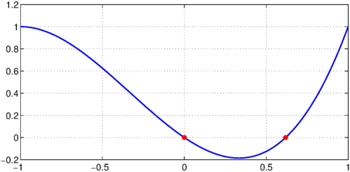
Of course, one does not need Chebfun to find roots of a polynomial. The Matlab roots command works from a polynomial's coefficients and computes estimates of all the roots, not just those in a particular interval.
roots([1 1 -1 0])
ans =
0
-1.618033988749895
0.618033988749895
A more substantial example of rootfinding involving a Bessel function was considered in Sections 1.2 and 2.4. Here is a similar calculation for the Airy functions Ai and Bi, modeled after the page on Airy functions at WolframMathWorld.
Ai = chebfun(@(x) airy(0,x),[-10,3]); Bi = chebfun(@(x) airy(2,x),[-10,3]); hold off, plot(Ai,'r') hold on, plot(Bi,'b') rA = roots(Ai); plot(rA,Ai(rA),'.r') rB = roots(Bi); plot(rB,Bi(rB),'.b') axis([-10 3 -.6 1.5]), grid on
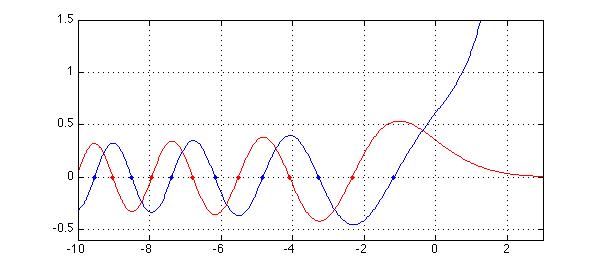
Here for example are the three roots of Ai and Bi closest to 0:
[rA(end-2:end) rB(end-2:end)]
ans = -5.520559828095558 -4.830737841662012 -4.087949444130976 -3.271093302836354 -2.338107410459771 -1.173713222709126
Chebfun finds roots by a method due to Boyd and Battles [Boyd 2002, Battles 2006]. If the chebfun is of degree greater than about $50$, it is broken into smaller pieces recursively. On each small piece zeros are then found as eigenvalues of a "colleague matrix", the analogue for Chebyshev polynomials of a companion matrix for monomials [Specht 1960, Good 1961]. This method can be startlingly fast and accurate. For example, here is a sine function with $11$ zeros:
f = chebfun('sin(pi*x)',[0 10]);
lengthf = length(f)
tic, r = roots(f); toc
r
lengthf =
44
Elapsed time is 0.005737 seconds.
r =
0
0.999999999999998
1.999999999999998
3.000000000000000
3.999999999999999
5.000000000000000
6.000000000000001
6.999999999999997
8.000000000000000
9.000000000000004
9.999999999999998
A similar computation with 101 zeros comes out equally well:
f = chebfun('sin(pi*x)',[0 100]);
lengthf = length(f)
tic, r = roots(f); toc
fprintf('%22.14f\n',r(end-4:end))
lengthf =
214
Elapsed time is 0.061368 seconds.
96.00000000000000
97.00000000000000
98.00000000000001
99.00000000000000
100.00000000000000
And here is the same on an interval with 1001 zeros.
f = chebfun('sin(pi*x)',[0 1000]);
lengthf = length(f)
tic, r = roots(f); toc
fprintf('%22.13f\n',r(end-4:end))
lengthf =
1684
Elapsed time is 0.237743 seconds.
996.0000000000000
996.9999999999999
998.0000000000000
999.0000000000000
1000.0000000000000
With the ability to find zeros, we can solve a variety of nonlinear problems. For example, where do the curves $x$ and $\cos(x)$ intersect? Here is the answer.
x = chebfun('x',[-2 2]);
hold off, plot(x)
f = cos(x);
hold on, plot(f,'k')
r = roots(f-x)
plot(r,f(r),'or')
r = 0.739085133215161

All of the examples above concern chebfuns consisting of a single fun. If there are several funs, then roots are included at jumps as necessary. The following example shows a chebfun with $26$ pieces. It has nine zeros: one within a fun, eight at jumps between funs.
x = chebfun('x',[-2 2]);
f = x.^3 - 3*x - 2 + sign(sin(20*x));
hold off, plot(f), grid on
r = roots(f);
hold on, plot(r,0*r,'.r')
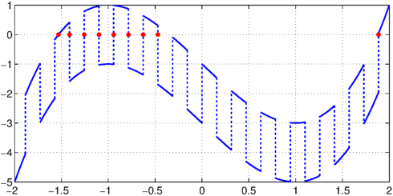
If one prefers only the "genuine" roots, omitting those at jumps, they can be computed like this:
r = roots(f,'nojump'); plot(r,0*r,'.r','markersize',30)
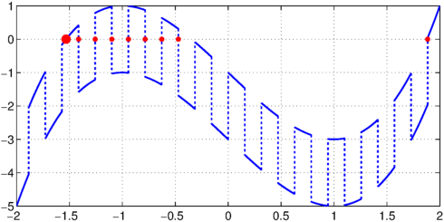
3.2 min, max, abs, sign, round, floor, ceil
Rootfinding is more central to Chebfun than one might at first imagine, because a number of commands, when applied to smooth chebfuns, must produce non-smooth results, and it is rootfinding that tells us where to put the discontinuities. For example, the "abs" command introduces breakpoints wherever the argument goes through zero. Here we see that x consists of a single piece, whereas abs(x) consists of two pieces.
x = chebfun('x')
absx = abs(x)
subplot(1,2,1), plot(x,'.-')
subplot(1,2,2), plot(absx,'.-')
x =
chebfun column (1 smooth piece)
interval length endpoint values
[ -1, 1] 2 -1 1
Epslevel = 6.492624e-16. Vscale = 1.
absx =
chebfun column (2 smooth pieces)
interval length endpoint values
[ -1, 0] 2 1 0
[ 0, 1] 2 0 1
Epslevel = 6.492624e-16. Vscale = 1. Total length = 4.
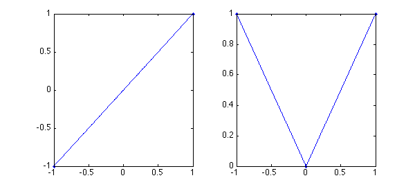
We saw this effect already in Section 1.4. Another similar effect shown in that section occurs with min(f,g) or max(f,g). Here, breakpoints are introduced at points where f-g is zero:
f = min(x,-x/2), subplot(1,2,1), plot(f,'.-') g = max(.6,1-x.^2), subplot(1,2,2), plot(g,'.-'), ylim([.5,1])
f =
chebfun column (2 smooth pieces)
interval length endpoint values
[ -1, 0] 2 -1 0
[ 0, 1] 2 0 -0.5
Epslevel = 8.713070e-16. Vscale = 1. Total length = 4.
g =
chebfun column (3 smooth pieces)
interval length endpoint values
[ -1, -0.63] 1 0.6 0.6
[ -0.63, 0.63] 3 0.6 0.6
[ 0.63, 1] 1 0.6 0.6
Epslevel = 1.015636e-15. Vscale = 1. Total length = 5.
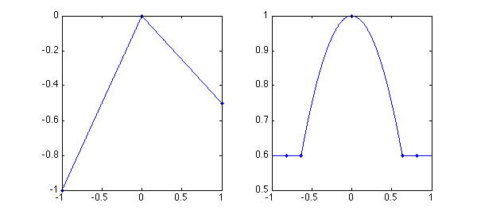
The function sign also introduces breaks, as illustrated in the last section. The commands round, floor, and ceil behave like this too. For example, here is $\exp(x)$ rounded to nearest multiples of $0.5$:
g = exp(x); clf, plot(g) gh = 0.5*round(2*g); hold on, plot(gh,'r'); grid on
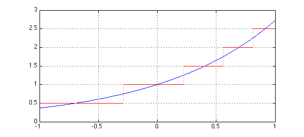
3.3 Local extrema: roots(diff(f))
Local extrema of smooth functions can be located by finding zeros of the derivative. For example, here is a variant of the Airy function again, with all its extrema in its range of definition located and plotted.
f = chebfun('exp(real(airy(x)))',[-15,0]);
clf, plot(f)
r = roots(diff(f));
hold on, plot(r,f(r),'.r'), grid on
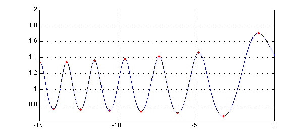
This method will find non-smooth extrema as well as smooth ones, since these correspond to "zeros" of the derivative where the derivative jumps from one sign to the other. Here is an example.
x = chebfun('x');
f = exp(x).*sin(30*x);
g = 2-6*x.^2;
h = max(f,g);
clf, plot(h)

Here are all the local extrema, smooth and nonsmooth:
extrema = roots(diff(h)); hold on, plot(extrema,h(extrema),'.r')
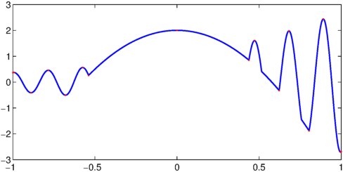
Suppose we want to pick out the local extrema that are actually local minima. We can do that by checking for the second derivative to be positive:
h2 = diff(h,2); maxima = extrema(h2(extrema)>0); plot(maxima,h(maxima),'ok','markersize',12)
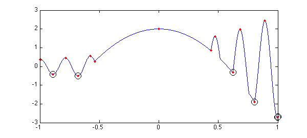
3.4 Global extrema: max and min
If min or max is applied to a single chebfun, it returns its global minimum or maximum. For example:
f = chebfun('1-x.^2/2');
[min(f) max(f)]
ans = 0.500000000000000 1.000000000000000
Chebfun computes such a result by checking the values of f at all endpoints and at zeros of the derivative.
As with standard Matlab, one can find the location of the extreme point by supplying two output arguments:
[minval,minpos] = min(f)
minval =
0.500000000000000
minpos =
-1
Note that just one position is returned even though the minimum is attained at two points. This is consistent with the behavior of standard Matlab.
This ability to do global 1D optimization in Chebfun is rather remarkable. Here is a nontrivial example.
f = chebfun('sin(x)+sin(x.^2)',[0,15]);
hold off, plot(f,'k')
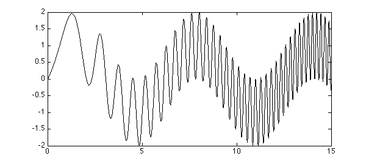
The length of this chebfun is not as great as one might imagine:
length(f)
ans = 216
Here are its global minimum and maximum:
[minval,minpos] = min(f) [maxval,maxpos] = max(f) hold on plot(minpos,minval,'.b','markersize',30) plot(maxpos,maxval,'.r','markersize',30)
minval = -1.990085468159410 minpos = 4.852581429906174 maxval = 1.995232599437863 maxpos = 14.234791972306914
For larger chebfuns, it is inefficient to compute the global minimum and maximum separately like this -- each one must compute the derivative and find all its zeros. An alternative code is offered that computes both at once:
[extemevalues,extremepositions] = minandmax(f)
extemevalues = -1.990085468159410 1.995232599437863 extremepositions = 4.852581429906174 14.234791972306914
3.5 norm(f,1) and norm(f,inf)
The default, $2$-norm form of the norm command was considered in Section 2.2. In standard Matlab one can also compute $1$-, $\infty$-, and Frobenius norms with norm(f,1), norm(f,inf), and norm(f,'fro'). These have been overloaded in Chebfun, and in the first two cases, rootfinding is part of the implementation. (The $2$- and Frobenius norms are equal for a single chebfun but differ for quasimatrices; see Chapter 6.) The $1$-norm norm(f,1) is the integral of the absolute value, and Chebfun computes this by adding up segments between zeros, at which $|f(x)|$ will typically have a discontinuous slope. The $\infty$-norm is computed from the formula $\|f\|_\infty = \max(\max(f),-\min(f))$.
For example:
f = chebfun('sin(x)',[103 103+4*pi]);
norm(f,inf)
norm(f,1)
ans = 1.000000000000004 ans = 7.999999999999984
3.6 Roots in the complex plane
Chebfuns live on real intervals, and the funs from which they are made live on real subintervals. But a polynomial representing a fun may have roots outside the interval of definition, which may be complex. Sometimes we may want to get our hands on these roots, and the roots command makes this possible in various ways through the flags 'all', 'complex', and 'norecursion'.
The simplest example is a chebfun that is truly intended to correspond to a polynomial. For example, the chebfun
f = 1+16*x.^2;
has no roots in $[-1,1]$:
roots(f)
ans = Empty matrix: 0-by-1
We can extract its complex roots with the command
roots(f,'all')
ans = 0.000000000000000 - 0.250000000000000i 0.000000000000000 + 0.250000000000000i
The situation for more general chebfuns is more complicated. For example, the chebfun
g = exp(x).*f(x);
also has no roots in [-1,1],
roots(g)
ans = Empty matrix: 0-by-1
but it has plenty of roots in the complex plane:
roots(g,'all')
ans = -0.000000000000005 - 0.249999999999979i -0.000000000000005 + 0.249999999999979i -4.519534831047145 + 0.000000000000000i -4.310652197045057 - 1.512819157499561i -4.310652197045057 + 1.512819157499561i -3.670948461500592 - 2.987351764446177i -3.670948461500592 + 2.987351764446177i -2.555840362767937 - 4.375486684702054i -2.555840362767937 + 4.375486684702054i -0.867134162481794 - 5.603132113814697i -0.867134162481794 + 5.603132113814697i 1.616798927380487 - 6.531424399414252i 1.616798927380487 + 6.531424399414252i 5.542977120059442 - 6.812933550348273i 5.542977120059442 + 6.812933550348273i
Most of these are spurious. What has happened is that g is represented by a polynomial chosen for its approximation properties on $[-1,1]$. Inevitably that polynomial will have roots in the complex plane, even if they have little to do with g.
One cannot expect Chebfun to solve this problem perfectly -- after all, it is working on a real interval, not in the complex plane, and analytic continuation from the one to the other is well known to be an ill-posed problem. Nevertheless, Chebfun may do a pretty good job of selecting genuine complex (and real) roots near the interval of definition if you use the 'complex' flag:
roots(g,'complex')
ans = -0.000000000000005 - 0.249999999999979i -0.000000000000005 + 0.249999999999979i
We will not go into detail here of how this is done, but the idea is that associated with any fun is a family of "Chebfun ellipses" in the complex plane, with foci at the endpoints, inside which one may expect reasonably good accuracy of the fun. Assuming the interval is $[-1,1]$ and the fun has length $L$, the Chebfun ellipse associated with a parameter $\delta\ll 1$ is the region in the complex plane bounded by the image under the map $(z+1/z)/2$ of the circle $|z|=r$, where $r$ is defined by the condition $r^{-L}=\delta$. (See Chapter 8 of [Trefethen 2013].) The command roots(g,'complex') first effectively does roots(g,'all'), then returns only those roots lying inside a particular Chebfun ellipse -- we take the one corresponding to delta equal to the square root of the Chebfun tolerance parameter eps.
One must expect complex roots of chebfuns to lose accuracy as one moves away from the interval of definition. Here's an example:
f = exp(exp(x)).*(x-0.1i).*(x-.3i).*(x-.6i).*(x-1i); roots(f,'complex')
ans = -0.000000000001446 + 0.099999999998498i 0.000000000837478 + 0.300000000630731i -0.000001482588610 + 0.599999257383601i
Notice that the first three imaginary roots are located with about $11$, $8$, and $5$ digits of accuracy, while the fourth does not appear in the list at all.
Here is a more complicated example:
F = @(x) 4+sin(x)+sin(sqrt(2)*x)+sin(pi*x); f = chebfun(F,[-100,100]);
This function has a lot of complex roots lying in strips on either side of the real axis.
r = roots(f,'complex'); hold off, plot(r,'.','markersize',8)
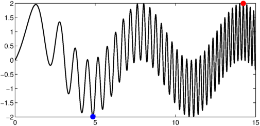
If you are dealing with complex roots of complicated chebfuns like this, it may be safer to add a flag 'norecursion' to the roots call, at the cost of slowing down the computation. This turns off the Boyd-Battles recursion mentioned above, lowering the chance of missing a few roots near interfaces of the recursion. If we try that here we find that the results look almost the same as before in a plot:
r2 = roots(f,'complex','norecursion'); hold on, plot(r,'om','markersize',8)
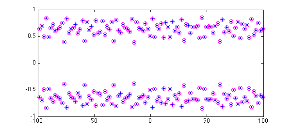
However, the accuracy has improved:
norm(F(r)) norm(F(r2))
ans =
3.489340188191644e-08
ans =
6.884658255816234e-09
To find poles in the complex plane as opposed to zeros, see Section 4.8. More advanced methods of rootfinding and polefinding are based on rational approximations rather than polynomials, an area where Chebfun has significant capabilities; see the next chapter of this guide, Chapter 28 of [Trefethen 2013], and [Webb 2013].
3.7 References
[Battles 2006] Z. Battles, Numerical Linear Algebra for Continuous Functions, DPhil thesis, Oxford University Computing Laboratory, 2006.
[Boyd 2002] J. A. Boyd, "Computing zeros on a real interval through Chebyshev expansion and polynomial rootfinding", SIAM Journal on Numerical Analysis 40 (2002), 1666-1682.
[Good 1961] I. J. Good, "The colleague matrix, a Chebyshev analogue of the companion matrix", Quarterly Journal of Mathematics 12 (1961), 61-68.
[Specht 1960] W. Specht, "Die Lage der Nullstellen eines Polynoms. IV", Mathematische Nachrichten 21 (1960), 201-222.
[Trefethen 2013] L. N. Trefethen, Approximation Theory and Approximation Practice, SIAM, 2013.
[Webb 2011] M. Webb, "Computing complex singularities of differential equations with Chebfun", SIAM Undergraduate Research Online, 6 (2013), http://dx.doi.org/10.1137/12S011520.